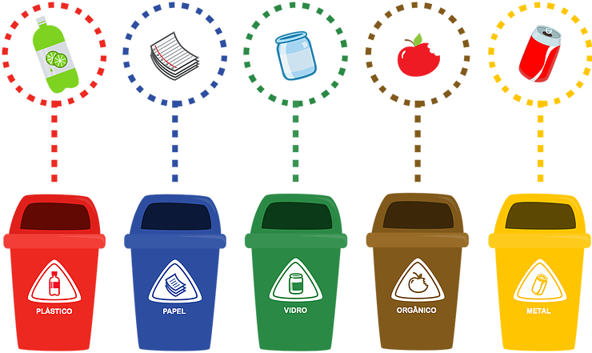

.png)
WASTE MANAGEMENT
TEXT 1 – How to develop waste management in universities?
Little by little, we have been perceiving in the media and social networks an increase in the commitment of society, companies and institutions in relation to concern for the environment. Population growth is directly linked to this manifestation, in which urbanization brings with it the unbridled generation of waste.
With technology and the advancement of civil construction and the pharmaceutical industry, for example, we can observe a significant change in the compositions, characteristics and increase in the hazardousness of solid waste used in university courses. This growth reflects the development of the population's consumption patterns and the way in which the waste generated in universities is disposed of.
In order to obtain a more dynamic view of the generation of solid waste in universities, we reflect on the number of university courses offered at the Institution in the most diverse areas of action in the labor market. This triggers a large flow of people and the generation of various types of solid waste, whether they are hazardous or not.
In the university environment, as well as in any company, when waste is not well managed, it is possible that it is inappropriately conducted to landfills, causing pollution of both soil and groundwater.
In addition, improper disposal can pollute nearby waterways, which are used to collect water for treatment and subsequent human consumption.
In order to obtain a broad knowledge of the amount and types of solid waste generated in universities, it is necessary to implement a management action plan with the respective Solid Waste Management Plan (SGRP), with the aim of analyzing the generation at the source, the separation and proper destination for this waste. These plans must be made with the use of specific strategies for each type of organization and require the direct support of management tools to support control and optimize processes.
Waste Management and Environmental Preservation in Universities
In order to practice environmental awareness of the preservation and proper disposal of solid waste generated by universities, it is necessary to organize management strategies in all sectors of the Institution. One of the plausible actions to be taken by students, employees, and the community at large, is the inclusion of larger dumpsters that add various types of categories, such as plastic, metals, and glass, among others. In addition to the use of bags in the colors of the CONAMA standard so that waste is stored correctly.
It is also possible to implement compost bins for organic waste, which can be used by students in practical classes on sustainability and the environment. In relation to waste considered hazardous (waste and effluents from sanitary services or civil construction laboratories), care must be duplicated and collected and stored in appropriate places within the Institution. Preferably, this type of material should be collected by specialized and licensed companies that use waste management systems for proper disposal and compliance with legal requirements.
On the other hand, materials that are considered recyclable must be stored specifically in a dry and closed place, until their correct destination, so that they do not have contact with other substances that alter their composition.
More than strengthening the image of the university as a sustainable organization, it is of utmost importance to implement an Environmental Management System within each sector. In this way, the awareness and attitude of environmental preservation has an impact on the consumption and destination of waste, bringing benefits for the well-being of the environment, through the optimization of materials, energy reduction and the reuse of natural resources, as well as, with the different conscious and responsible practices.
POST DATE:
06/07/2017
Author:
Admin
Contact:
meuresiduo@meuresiduo.com